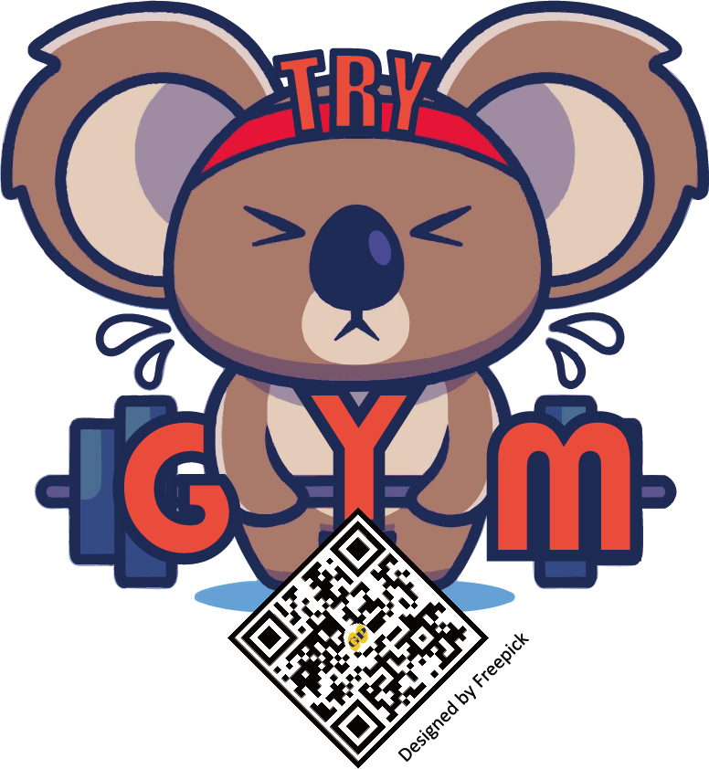

2026
선교와 커리어의 만남
GLOBAL
YOUNGMAN
MOVE
글로벌 청년 인턴십 프로그램

Global Field
해외 선교 현장 실무 경험
Data & Project
데이터 분석 및 프로젝트 역량
Network & Mentoring
글로벌 네트워크 및 멘토링
CURRICULUM
PROGRAM STRUCTURE
01 국내 교육
1.5개월
• 선교학 기초 & 타문화 이해
• 연구 방법론 & 질적연구 & 설문, 인터뷰
• 데이터 분석 및 시각화 & 프로젝트 기획 스킬
02 현장 실습
3개월 이내
• 현지 선교 현장 실무 체험
• 지역 연구 프로젝트 수행
• 멘토링 & 네트워크 형성
03 디브리핑
0.5개월
• 경험 정리 & 보고서 작성
• 결과 발표 & 평가
2026 SCHEDULE
수시 모집
지원자와 매칭 필드 상황에 따라 조정 가능
국내교육 1.5개월 + 현장실습 3개월 이내 + 디브리핑 0.5개월
수시 모집
지원자와 매칭 필드 상황에 따라 조정 가능
국내교육 1.5개월 + 현장실습 3개월 이내 + 디브리핑 0.5개월
GYM 1기 사례
튀르키예 ㅇㅇㅇ
연구 보고서
튀르키예 ㅇㅇㅇ 문화원 학습자들의 학습 장애 요인 및 요구 분석에 따른 교육적 시사점
연구 보고서 보기
GYM 1기의 소식 나눔 보기
GYM 글로벌 인턴십
지금 지원하고 글로벌 현장을 경험하세요
지금 지원하고 글로벌 현장을 경험하세요
프로그램 특전
인턴십 수료증 발급
매칭 펀드 지원
멘토 추천서 제공
글로벌 네트워크 형성
재정 지원 혜택
인턴십 기간 동안 매월 30–50만원 지원
항공료 50% 지원 + 보험료 지원
인턴십 기간 동안 매월 30–50만원 지원
항공료 50% 지원 + 보험료 지원
지원 및 프로그램 안내
QR 코드를 스캔하여 지원 및 상세 정보를 확인하세요

자세히 알아보기
모집 대상: 20–30대 크리스천 청년
m.site.naver.com/210sZ